Shaders
GPU go brrrrr
In this part, we implemented a few GLSL shader programs. Shaders are realistic lighting programs that run parallel in the GPU instead of in the CPU. It executes sections of the graphics pipeline by taking in inputs and outputting 4 dimensional vectors. As a result, shaders accelerate rendering of lighting and material effects that would take a long time on the CPU.
GLSL shader programs are composed of two things: vertex shaders and fragment shaders. Vertex shaders apply transforms to vertices and writes to variables used in the fragment shader. Fragment shaders process fragments that are created after rasterization and write out a color for the fragment.
In our first task, we implemented diffused shading by calculating the out_color using the diffused shading equation shown in the spec and lecture (using a diffuse coefficient of 1.0). Then, we implemented Blinn-Phong shading, which incorporates diffused shading from our first part. The Blinn-Phong model is a lighting model that not only accounts for diffused shading but also ambient lighting and specular reflection to give us a better model of lighting on an object. The use of all three components leads to the following equation for Blinn-Phong:
For our Blinn-Phong calculations, we used the follwing constant values:
ka = 0.1, kd = 1.0, ks = 0.6, p = 80
Ambient component of Blinn-Phong:
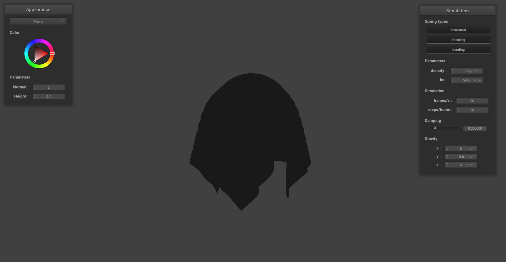Diffuse component of Blinn-Phong:
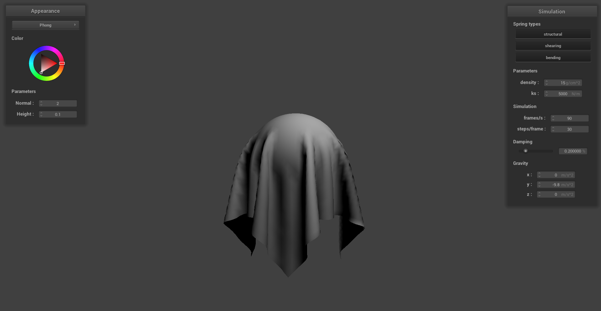Specular component of Blinn-Phong:
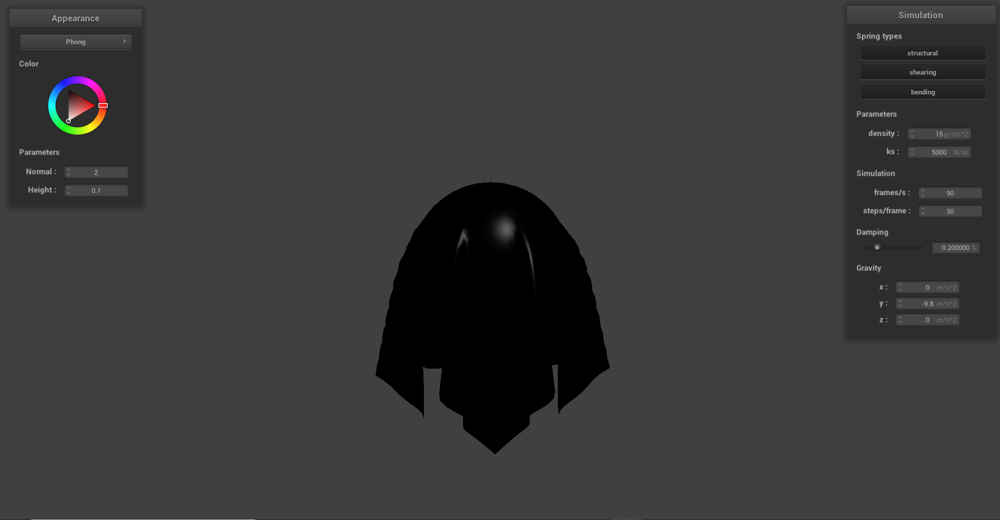Complete Blinn-Phong lighting:
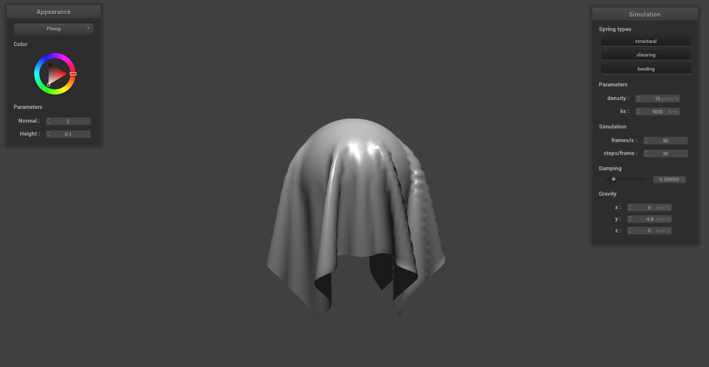We also implemented texture mapping as a part our shader implementation. This was done by sampling from a texture at the texture space coordinate uv. We can see an example below with a custom texture mapped to the cloth draped over a sphere.
Texture mapping shader:
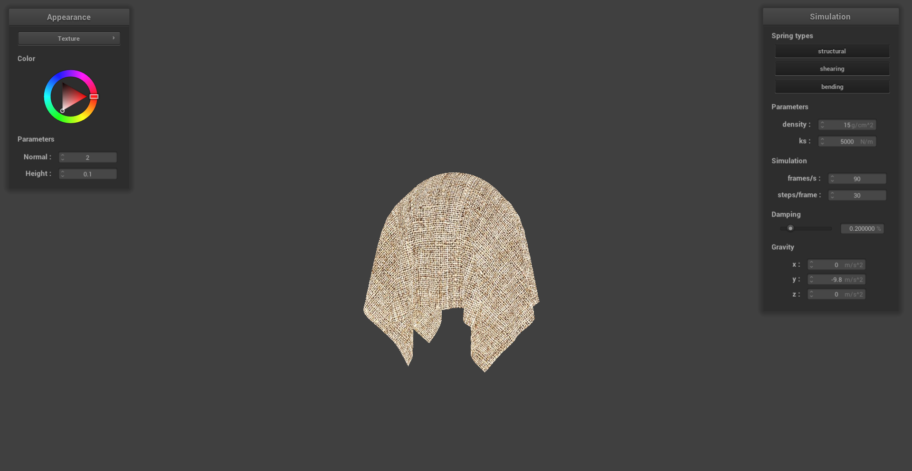Next, we implemented bump and displacement mapping so that our shader has the ability to produce details on an object. For bump mapping, we modified the fragment shader by adjusting the normals of the object so that we can give off the illusions of bumps through shadows. This was done by calculating our new normals in object space and then converting our calculations into model space by using the tangent-bitangent-normal (TBN) matrix. The local space normal (converted to object space using TBN) and values for the local normal were calculated using:
Meanwhile, displacement mapping was implemented by modifying the vertex shader as well as the fragment shader. In the vertex shader, the positions of the object's vertices were adjusted by physically displacing them in the direction of the original model space vertex normal scaled by the u_height_scaling variable. This was implemented by using the following equation:
When changing the sphere mesh's coarseness from 16 to 128, we see some very subtle differences in the outputs of the shader. We can see that the sphere in the 128 coarsness image is more jagged for displacement, which leads to more displacement and jaggedness on the cloth. We also see that there are more prominent details in the 128 coarse bump renders as compared to the 16 coarse bump renders.
The height was set at 0.03 while the normal was set to 100 for all of the images generated below.
Bump coarsness 16 on sphere:
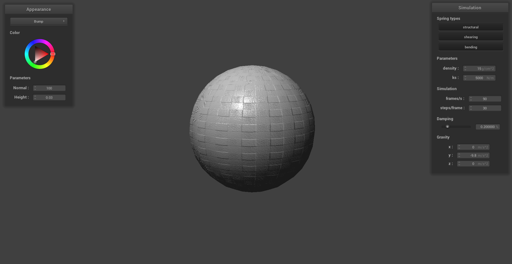Bump coarsness 16 on cloth:
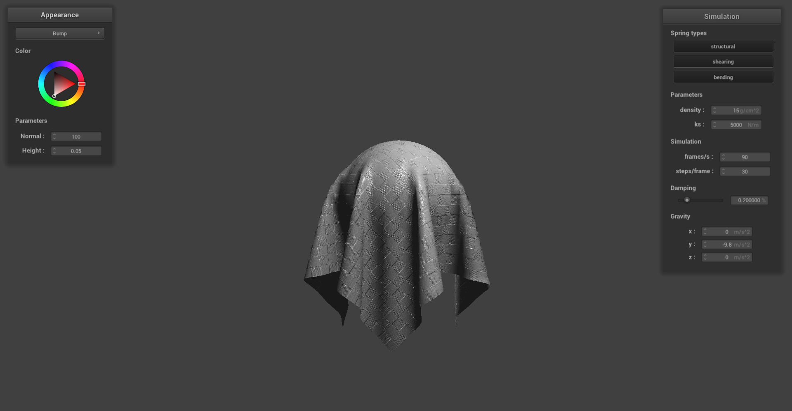Displacement coarsness 16 on sphere:
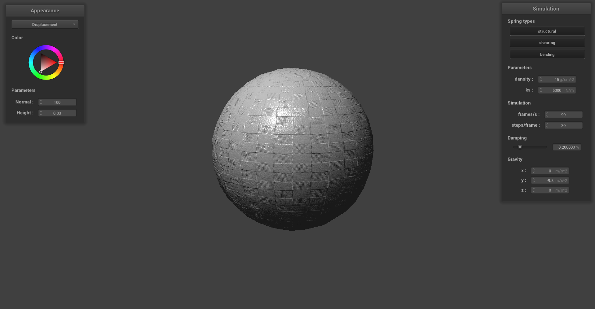Displacement coarsness 16 on cloth:
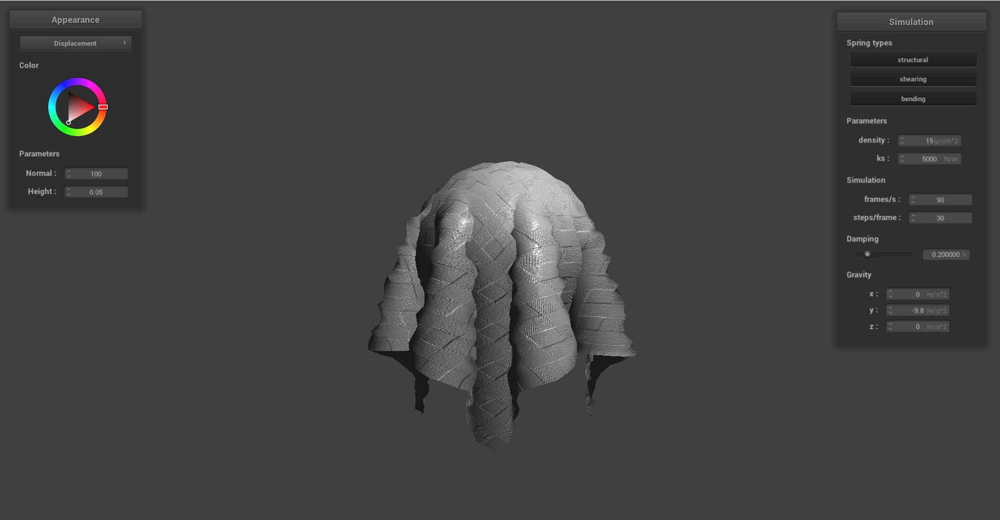Bump coarsness 128 on sphere:
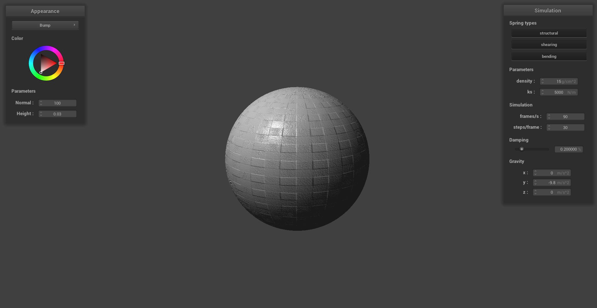Bump coarsness 128 on cloth:
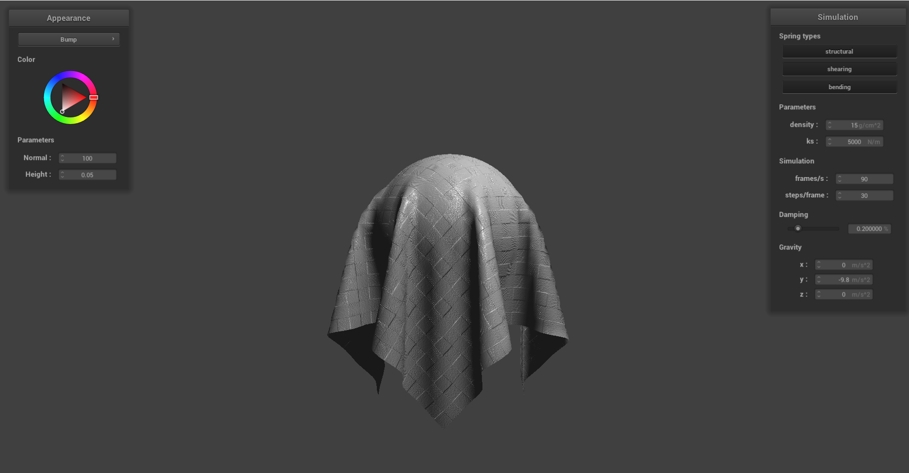Displacement coarsness 128 on sphere:
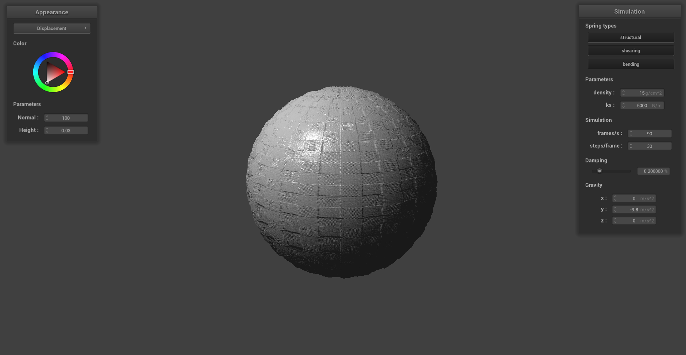Displacement coarsness 128 on cloth:
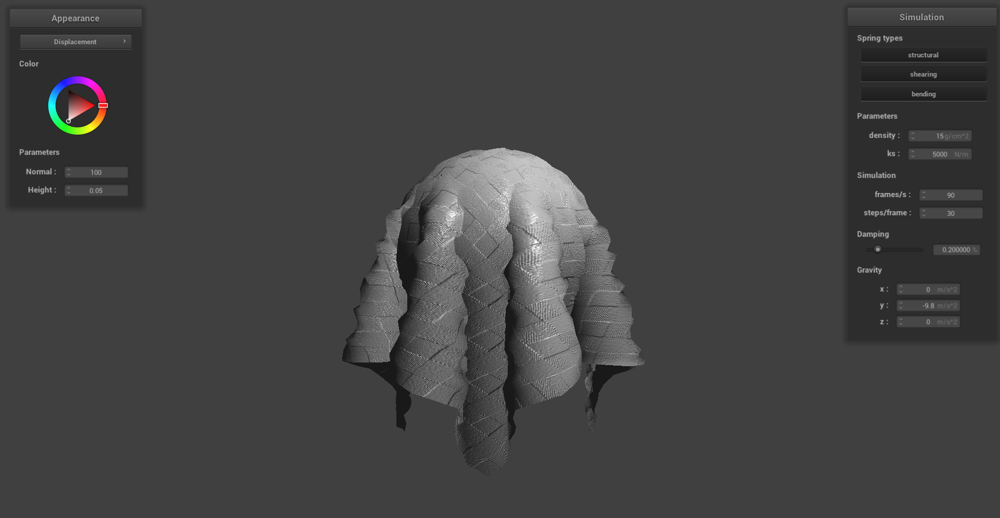Finally, we implemented a mirror shader that can simulate reflective surfaces on our cloth and sphere as shown below. To implement this, we computed the eye-ray, reflected it across the surface normal to get the incoming ray, and sampled the environment map for the incoming direction.
Mirror shader on pinned cloth:
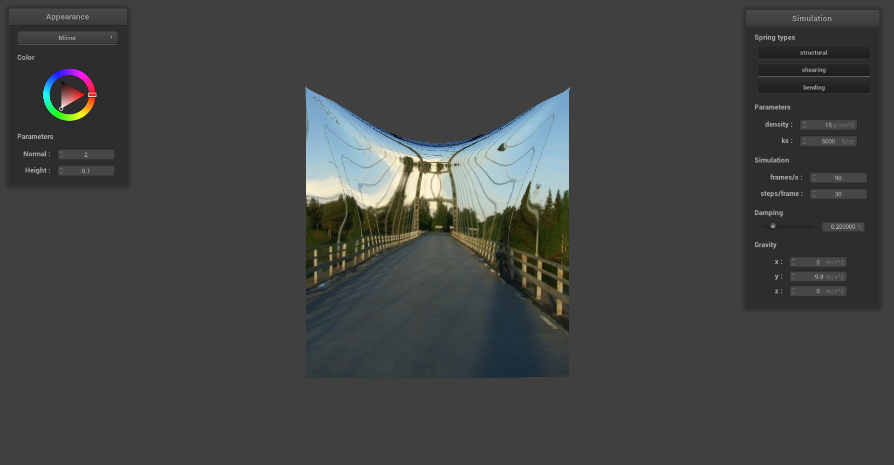Mirror shader on cloth above sphere:
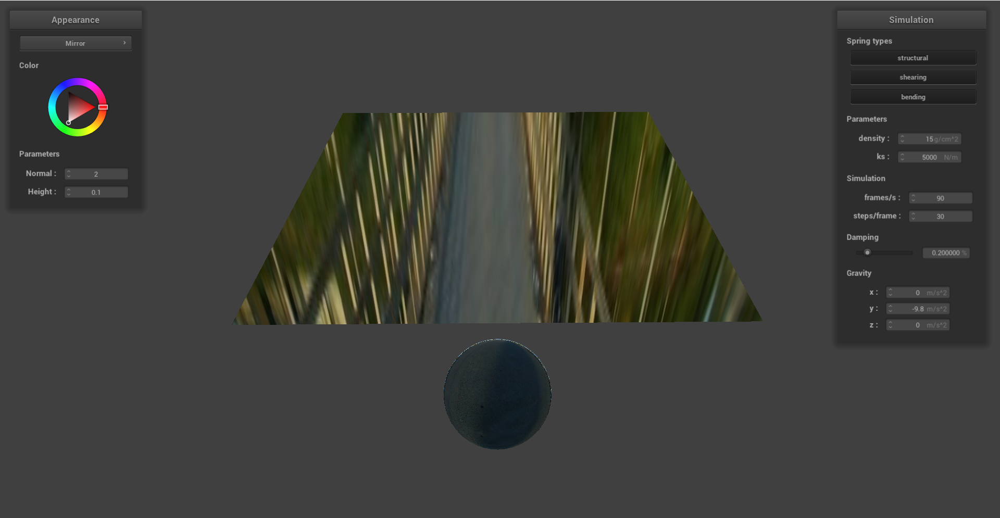Mirror shader on sphere:
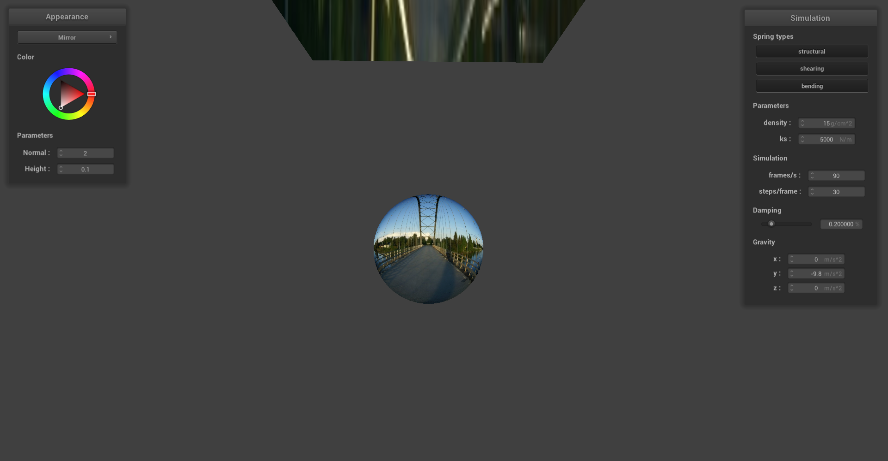Mirror shader on cloth draped over sphere:
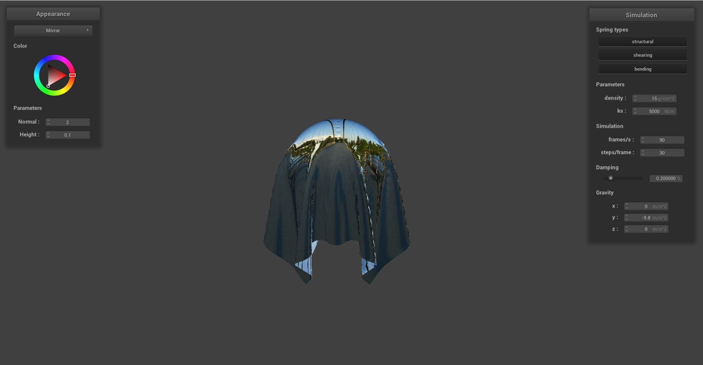